העולם בלבן- לפלנד 2017

Bagii
08/12/2017
1,675
4
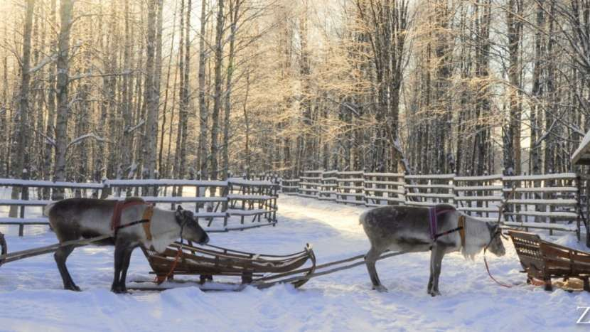
מזה זמן רב רצינו לנסוע ללפלנד, אבל תמיד היו תירוצים למה לא- יקר, קר, אין בגדים מתאימים, מועדים בעייתיים מבחינת לקחת חופש וכו'... וכך קרה שכשחזרנו מתאילנד בסוף אוקטובר 2016, בעבודה של בעלי יצאה חוברת טיולים מסובסדת ע"י הועד ולפלנד היתה יעד.
בהתחלה קצת התלבטנו כי מה פתאום עכשיו נסע בטיול מאורגן? זה הרי הכי לא אנחנו, אבל כשראינו את המחיר זה די פתר לנו את הלבטים. נשאר רק מכשול אחד בדרך וזה לתפוס מקום כי ההרשמה לטיולים נפתחה ביום אחד לכולם ובעצם כל הקודם זוכה כי הכל על בסיס מקום פנוי.
ביום פתיחת ההרשמה הכנתי את בעלי שאם לא נצליח לתפוס מקום לא נורא, ניסע בטיול עצמאי, אבל 2 דקות אחרי הפתיחה בעלי מתקשר אלי נרגש- "נראה לי שתפסתי מקום", יאיי נוסעים ללפלנד!
אז לפני שמתחילים בתיאור הטיול (שבינינו די דומה בכל החברות והנוסעים העצמאיים) כמה טיפים על לבוש, ציוד והערכות:
לבוש:
כמו שאמר המדריך האיסלנדי שלנו בטיול לאסקיה כשירד עלינו שלג: "there is no such thing as bad weather, there is bad clothing"- אין דבר כזה מזג אוויר לא טוב, יש לבוש לא טוב. אותו הדבר תקף גם ללפלנד. אז קודם כל אני ארגיע בכך שאיך שמגיעים ללפלנד נוסעים למרכז ציוד ומקבלים: נעליים מצוינות, גרביים, כפפות, כובע, צעיף וחליפת שלג. למי שיש ציוד סקי בבית או מעילים טובים כדאי לקחת גם כי החליפה די מסורבלת ואם אתם רוצים לטייל בעיירה או לוותר על החליפה מעיל טוב ומכנס טוב זה פתרון אפשרי. אני ובעלי קנינו בזמנו מעילים טובים במוסקבה כך שהיינו מסודרים מהבחינה הזו ולכן יכולנו לתמרן בין ללבוש את החליפה לבין המעיל ומכנס טוב.
- לבוש מתחת לחליפה: הטיפ שלי זה לקנות ביגוד תרמי טוב, אנחנו קנינו ב"למטייל" 2 זוגות מכנסיים וחולצות לכל אחד וכן 2-3 חולצות מיקרופליז. מעל התרמי אני שמתי גם מכנס טריקו עם ריפוד (מוכרים בכל חנות בגדים-לקחתי 2 מכנסיים) וחולצת מיקרופיז.
- לגבי גרביים- זוג אחד תרמי מתחת ומעליו כרב חמה (שימו לב שגבי מידת הנעליים שאתם לוקחים, כדאי מידה אחת גדולה יותר בגלל הגרביים).
- כפפות- קנינו ב"למטייל" כפפות דקות איכותיות ומעליהן כל כפפה עבה וחמה (ככה תוכלו להשתמש בידיים מבלי שיקפאו ופשוט להישאר עם השכבה הדקה יותר)
- כובע- לפחות 2 כובעים איתכם כי אם יורד שלג זה נרטב, לקחת כובע צמר חם ומעליו אפשר קפוצ'ון שיגן מרטיבות. שימו לב גם אם חם לכם אל תורידו את הכובע כשאתם בחוץ כי דרך הראש מאבדים הרבה חום מבלי שמרגישים.
- צעיף או חם צוואר- רצוי צמר או מיקרופליז.
הטיול הוא גג לשבוע ולרוב אתם מכוסים בחליפה כך שאין מה להביא את ארון הבגדים איתכם, באמת שכדי שאכול במלון או במסעדה אפשר ג'ינס או מכנס טריקו וחולצת מיקרופליז, אף אחד לא עושה לכם סלקציה בכניסה על לבוש...
ציוד נוסף:
- מצלמה וחצובה- אם יתמזל מזלכם ותראו את הזוהר הצפוני, לרוב לא ניתן לצלם אותו ללא חצובה כי צריך חשיפה ארוכה.
- סוללות נוספות- תופעה שמתרחשת בקור העז היא שהסוללה פשוט קופאת ומראה לכם שהיא ריקה ולכן טלפון או מצלמה יכולים פשוט לכבות באמצע. טיפ שלי- לשים בתיק צעיף ולעטוף את המצלמה והסוללות, אם זה טלפון אפשר לשמור בכיס הפנימי של החליפה. רק במינוס 20 כבה לנו הטלפון, המצלמה שהיתה בתיק עם הצעיף עבדה יופי.
- שקיות חימום: תמיד טוב לשים בתוך הנעל או ברגליים כחימום נוסף
- מקלות הליכה מתאימות לשלג- לא תאמינו כמה אנשים נפצעים בטיול ללפלנד בגלל נפילות ושברים כתוצאה מכך. אם יש לכם מקלות הליכה עם חוד חד שניתן לנעוץ בשלג קחו איתכם, אם לא כדאי לרכוש בחנויות ברובניימי ברזלים לנעליים שמונעים החלקה.
- כסף: המטבע המקומי זה יורו ובכל מקום מקבלים כרטיס אשראי.
קצת על לפלנד:
לפלנד הוא חבל ארץ בצפונה של אירופה הכולל את חלקיהן הצפוניים של ארצות סקנדינביה ואת חלקו הצפוני של חצי האי קולה שתחת השלטון הרוסי. אזור לפלנד משתרע בשטחיהן של 4 מדינות : פינלנד, רוסיה, נורווגיה ושוודיה. כבירת החבל נחשבת העיר הפינית רובניימי.
רוב אוכלוסיית האזור מתגוררת בכפרים וערים קטנות שמפוזרים על פני שטח עצום. כ-80 אלף "בני סאמי", הידועים גם כסאמים, חיים ברחבי לפלנד, בעיקר בחלקה הדרומי, כאשר רישום וסטטיסטיקות לא-אחידים בין מדינה למדינה מסבירים את הפערים בהערכת מספרם המדויק. בלשונות רבות השתרש המינוח "לאפים" שבעיני הסאמים נתפס לעתים כמעליב.
תושבי לפלנד הסקנדינבית הם אזרחים שווים בשלוש המדינות שבשטחן הם חיים, וחוקים הנוגעים ללשון ותרבות, שנחקקו בכל אחת מהמדינות, מבטיחים את המשך הקיום הקהילתי הייחודי שלהם. כמחצית מהסאמים (50,000 איש) נמצאים בנורווגיה, שהיא גם המתקדמת ביותר ביחסה אליהם.
אז אחרי שארזנו הכל אנחנו מוכנים לצאת לדרך:
יום 1- 24.2
טיסת בוקר של חברת ישראייר לרובניימי. משך הטיסה 6 שעות, לא קל אבל לקחנו ספר והרבה נשנושים (כי מחלקים סנדוויץ' מזעזע). וכבר בנחיתה נגלה לעינינו עולם בלבן מנוקד בעצים אפורים, מחזה מדהים למי שלא מורגל בנוף מושלג כמונו.
להפתעתנו כל שדה התעופה לבן ופתיתי שלג יורדים מהשמיים. השלג עצמו מנצנץ כמו יהלומים עד כדי כך שפשוט בא לנו לקפוץ פנימה ולשחות בשלג.
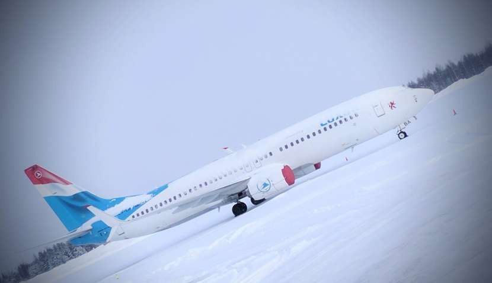
שדה התעופה של רובניימי הוא פצפון כך שאנחנו הטיסה היחידה שנחתה באותו הזמן, מקבלים את המזוודות ומתחלקים לקבוצות ולאוטובוסים. בינתיים אנחנו מנצלים את הרגע לשוטט בחוץ ולהנות מהשלג, האוויר כלכך רענן ומרוב הקור הלחיים מעקצצות, בחוץ מינוס 11 מעלות והאמת לא קר לנו עם המעילים המוסקבאים שלנו.
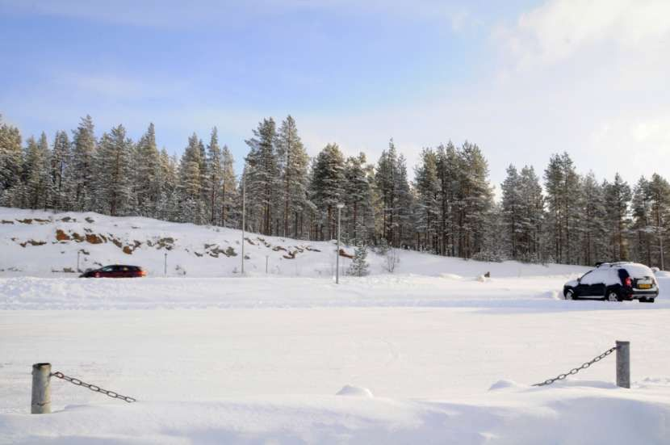
התחנה הראשונה שלנו היא הצטיידות במרכז הציוד- מגיעים ונכנסים לשרשרת חיול כמו בבקו"ם, מקבלים קיטבג עם נעליים, גרביים, כפפות, כובע, צעיף וחליפה, מודדים הכל ומחליפים אם צריך, כמו שכתבתי מעלה- כדאי למדוד את הנעל עם 2 זוגות גרביים חמות. לבושים היטב נחנו יוצאים לחכות בחוץ ולשחק קצת בשלג :)
משם אנחנו ממשיכים למלון לארוחת צהריים- המלון נקרא סנטה קלאוס וממוקם בלב רובניימי, במרחק דקה מהפאבים והמסעדות, 5 דקות מהקניון, 10 דקות ממוזיאון הארקטיקום (תזכרו את השם כי משם ניתן לצפות בזוהר אם אתם בעיר), ו-5 דקות מהנהר.
אנחנו עטים על האוכל, כי מסתבר ששהיה במינוס 11 מעלות שורפת המון קלוריות. שבעים יוצאים לטיול הראשון שלנו- יער פיני.
אנחנו נוסעים לאיזור ואטאנוקי (Vaatanuki) איזור של חוטבי עצים ויערות, נסיעה קצרה של כ-20 דקות מהמלון, בחוץ מתחיל לרדת שלג (פתיתים קטנים). אנחנו מגיעים ונכנסים ליער ומתחילים מסלול של כשעה הליכה.
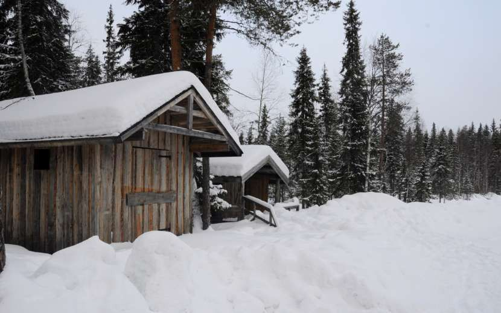
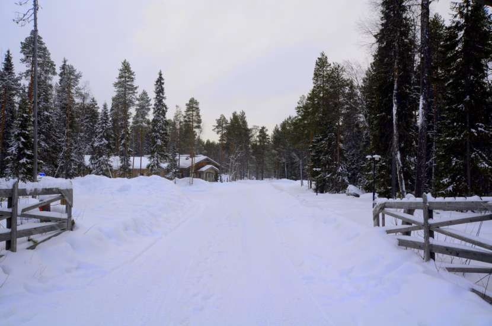
הכל מסביבנו לבן, אנחנו צועדים על המסלול עצמו אבל כלכך בא לנו לצלול לתוך השלג שמצידנו, בעלי מסתכן ו"נופל" לשלג בגובה המותניים. כל העצים מכוסים בלבן ולאט לאט גם אנחנו בזכות הפתיתים הורדים.
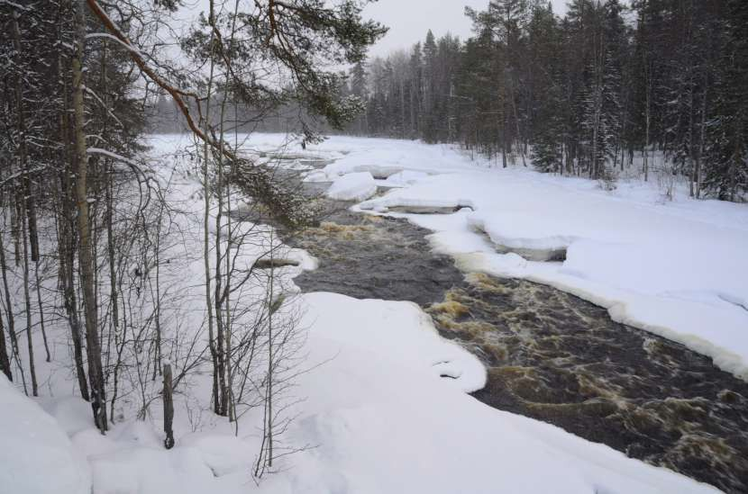
לקראת סוף המסלול מגיעים לקרחת יער עם בקתה מלאת עצים ומדורה דולקת, שם מכינים לנו את המשקה המקומי- יין פירות חם, תאמינו לי שבקור הזה אין כמו משקה חם!!! מסתבר שבכל מסלול לאומי בפינלנד יש בקתות מלאות עצים לטובת המטיילים שיוכלו להדליק אש ולהתחמם. אנחנו מקשקשים קצת עם המדריכה המקומית שהיא בעצם סטודנטית (רובניימי מלאה בסטודנטים) שמתפרנסת כמו השאר בעונת תיירות החורף מלווי קבוצות ומהכנת יין פירות…
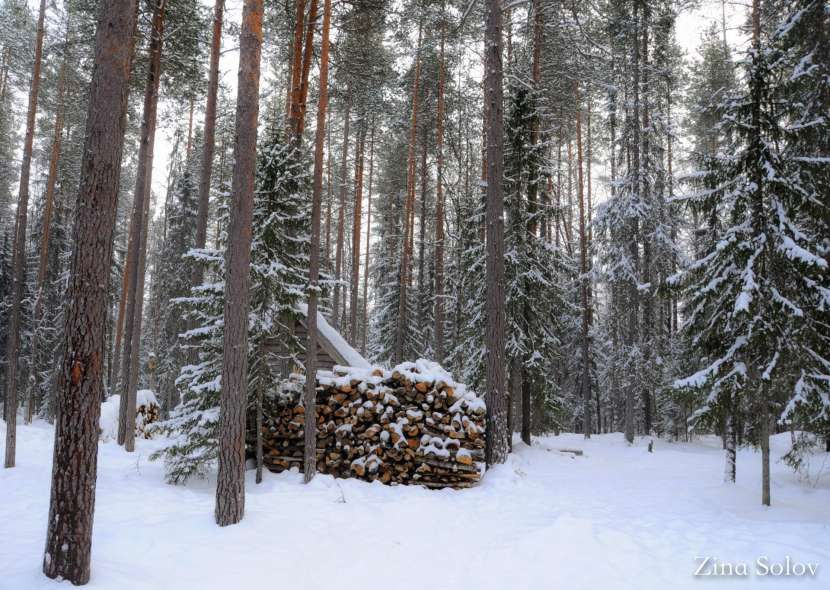
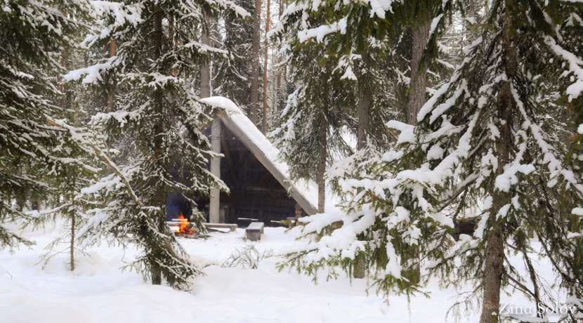
עייפים ומרוצים חוזרים למלון לארוחת ערב, ולאחר מכן קינחנו בבירה בפאב שמול המלון- אפילו לא טרחנו להתלבש חם כי מדובר בנטו 5 צעדים מהמלון.
יום 2- 25.2
אנחנו קמים לבוקר שטוף שמש, אגב בעונה שלנו (פברואר) השמש לא עולה הרבה מעל האופק אבל שעות האור כבר די ארוכות- זריחה בסביבות 8 ושקיעה בסביבות 6. רק מה, השמש מאוד מתעתעת, בארצות הצפון יום שמש משמע יום כפור! כי העננים מחממים מעט את האוויר בעוד ששמש לא באמת מחממת ורק מבליטה את הקרח והכפור. מזג האוויר עומד על מינוס 12, אחרי ארוחת בוקר מזינה, אנחנו יוצאים לאטרקציה הראשונה שלנו- חוות איילים.
הנהג שלנו קצת מתבלבל ולוקח אותנו לחוות האיילים הלא נכונה, אנחנו בינתיים מנצלים את ההזדמנות לצלם את החיות המדהימות האלה.
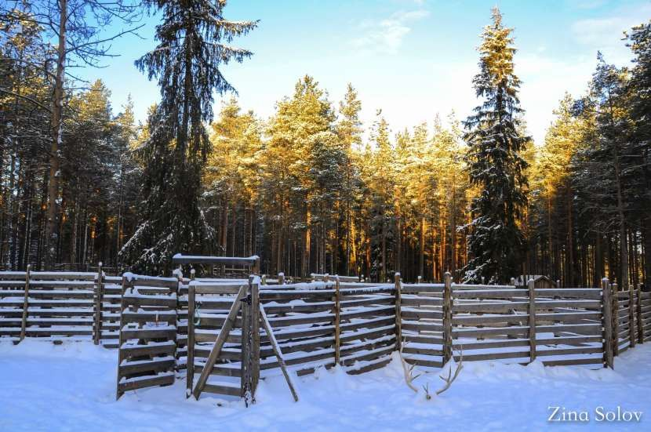
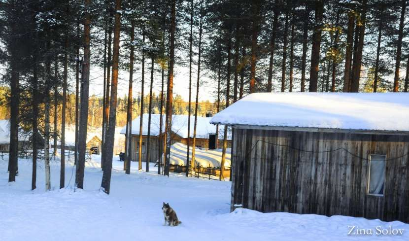
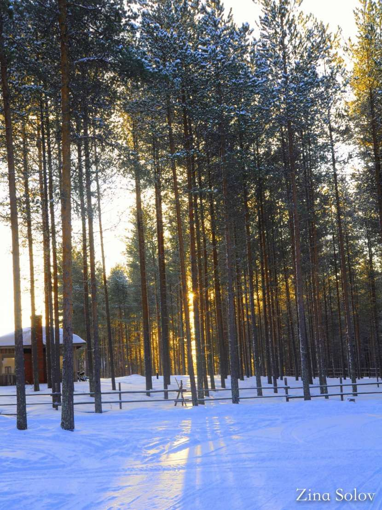
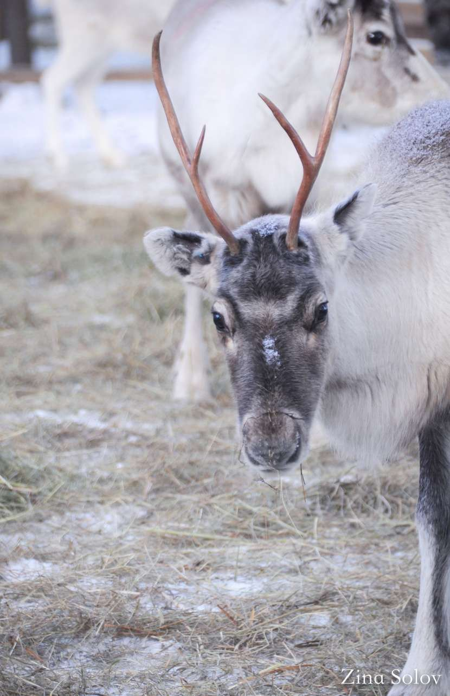
משם המשכנו לחווה הנכונה. נכנסנו לאוהל עם אח בפנים ושמענו סיפורים על חוות איילים, איך מגדלי אותם ולמה הם משמשים- יש כאלה שלמאכל (עד כמה שזה עצוב) יש כאלה למירוצי איילים ויש שפשוט ישמשו לתיירות או עזרה בבית (אין חמורים בלפלנד אז האיילים עושים את העבודה). בקיץ האיילים משטווים חופשי ביערות ולקראת החורף מקבצים אותם לתוך החוות.
אנחנו עושים סיבוב במזחלת רתומה לאיילים, אחרכך שותים יין פירות חם ועוברים לנסות הליכה עם נעלי שלג (לא הכי נוח חייבת להגיד), ומשם אנחנו הולכים לנסות דיג קרח. בעלי חובב הדיג כבר שש להתנסות, אבל לצערו לא מצליח לתפוס כלום בנהר הקפוא…
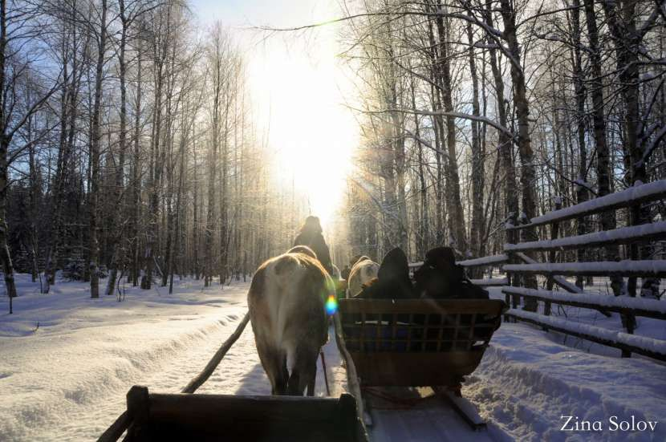
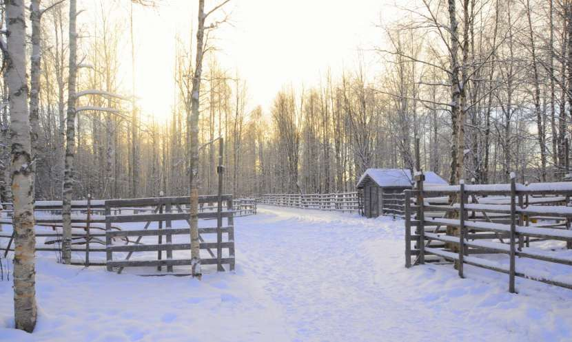
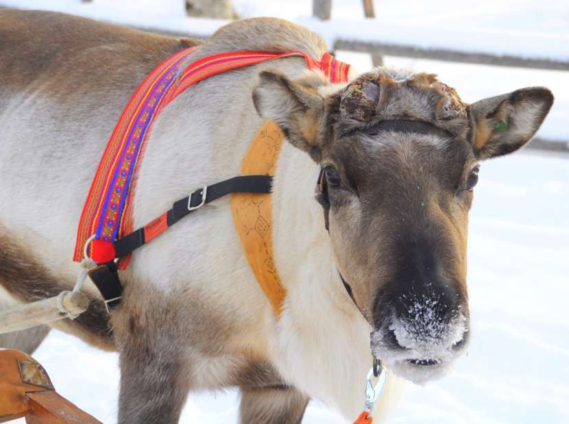
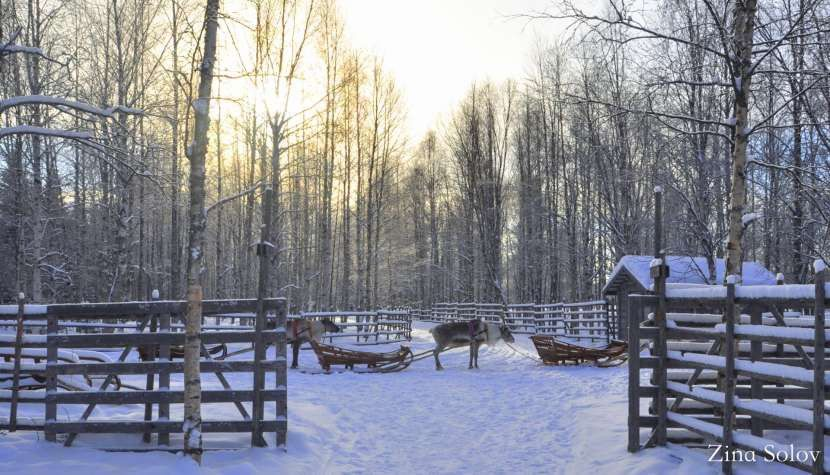
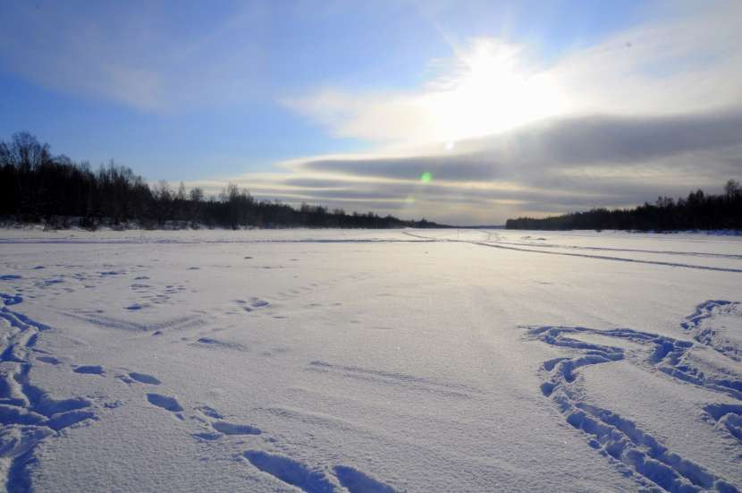
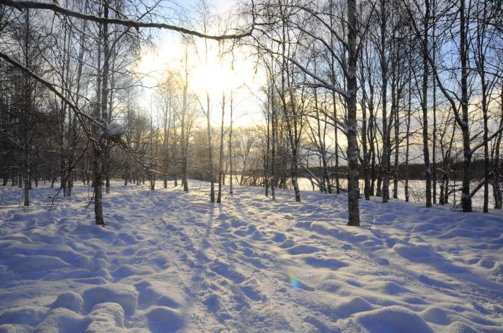
אחרי שעתיים פעילות בחוץ אנחנו חווים כזה רעב מטורף! למרות שלא קר לנו, כי אנחנו לבושים טוב הגוף שורף המון אנרגיה על חום... את ארוחת הצהריים אנחנו אוכלים בחווה, מרקים טעימים ולחם עם חמאה, יאמייי.
המסעדה בחווה מקושטת בקרי איילים- אל תדאגו האייל משיר קרניים ומגדל חדשות כל שנה ככה שהוא לא נפגע.
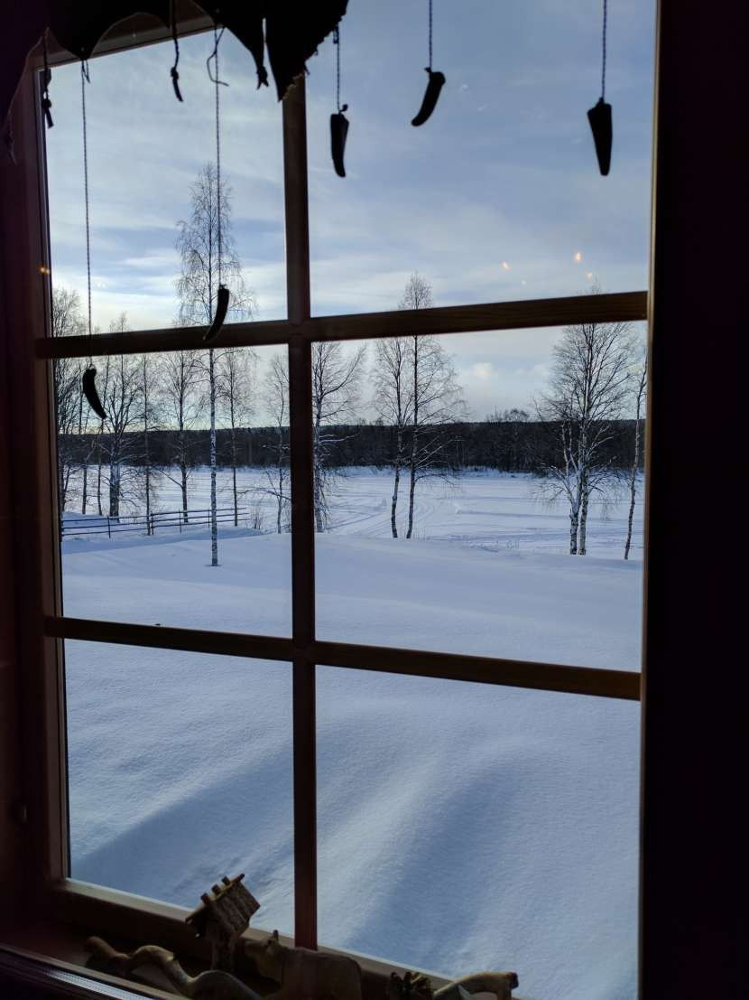
מכאן אנחנו ממשיכים דובדבן שבקצפת להיום- מזחלות כלבי האסקי. בתור חובבת כלבים גם אני בהתחלה חשבתי שמדובר בהתעללות, אבל ברגע שמגיעים לחווה ורואים את הכלבים מחכים בקוצר רוח לריצה שלהם, כל החששות נעלמים. הכלבים מטופחים, בריאים ואנרגטיים ומאוד חברותיים.
יש המון חוות כלבי האסקי סביב רובניימי, לרוב מי שמתחזק אותן אלו נהגי מרוצים של כלבים שמנצלים את התיירות כדי לאמן את הכלבים לקראת תחרויות.
כלבי האסקי זו הגדרה כללית מאוד להרבה זנים של כלבים- יש האסקי סיבירי, האסקי אלסקי, אלסקלן מלמנט ועוד רבים. יש גם המון כלבים מעורבים והמשותף להם שהם כלבים אנרגטיים שצריכים ריצה, בעלי סיבולת גבוהה וחזקים וכן מאוקלמים לצפון- לכלבים כאלה מינוס 10 זה חם!
הסידור שלהם במזחלת הוא בין 5 ל-6 כלבים כאשר בהתחלה אלו המובלים- המנהיגים שמכתיבים את הקצב והכיוון ומכוונים את המזחלת, באמצע לרוב שמים כלבים מבוגרים יותר או צעירים להתלמדות ובסוף זה כלבי ה"מנוע" הכלבים שנותנים מהירות וכוח. הכלבים ימשיכו לרוץ אם לא תעצרו אותם ולכן במזחלת יש בלם שלוחצים עליו עם הרגל כשרוצים שהכלבים יעצרו.
אגב אם עפתם מהמזחלת אין טעם שרדפו אחריה, אין סיכוי שתשיגו את הכלבים.
כל האטרקציה מנוהלת היטב, אנחנו מתיישבים במזחלת עם 5 כלבים מקסימים שכבר חסרי סבלנות להתחיל בריצה. לכל השיירה יש 3 מלווים על אופנועי שלג- בהתחלה, בסוף ואחד שנוסע באמצע כך שאם קורה משהו מיד עוצרים. אנחנו מתחילים בנסיעה, הכלבים שועטים קדימה בהתרגשות, אנחנו חולים על פני נופים לבנים, השמש נמוכה באופק העצים מכוסי שלג פשוט מדהים.
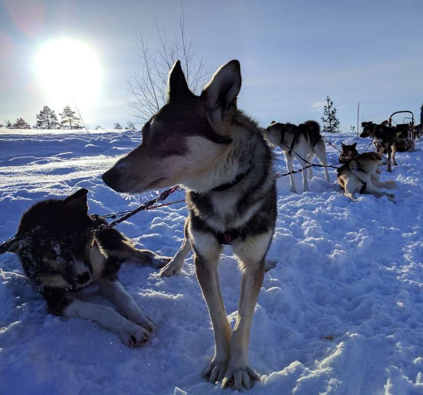
היה משעשע לראות את הכלבים עושים את צרכיהם תוך כדי ריצה, וכשהם רוצים לשתות הם פשוט נוגסים בשלג וממשיכים.
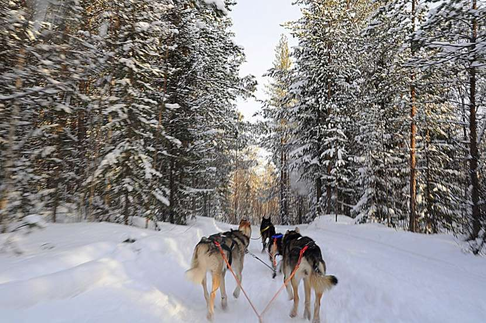
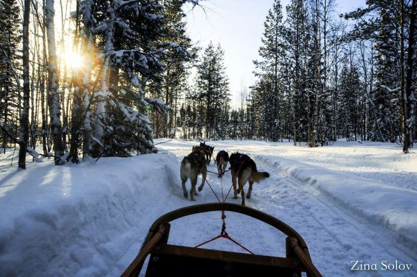
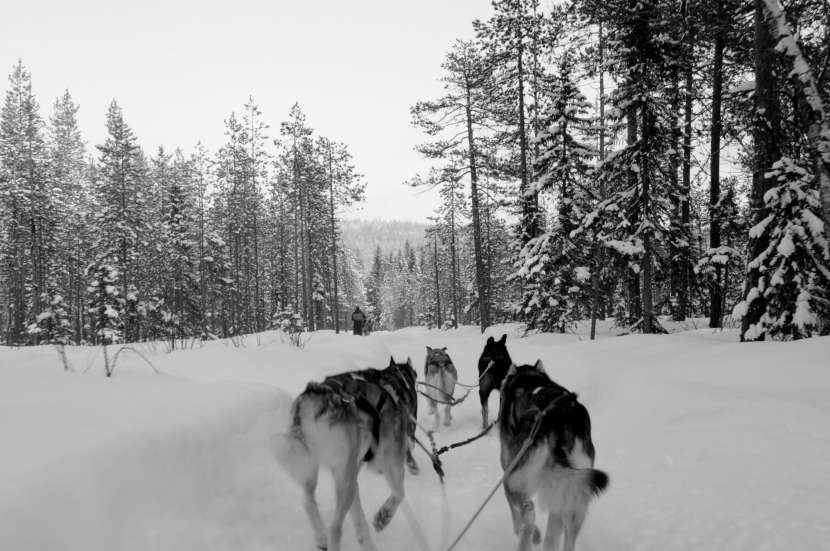
המסלול הוא כ-15 ק"מ ולוקח כשעתיים וחצי, כשאמצע יש עצירה למנוחת הכלבים שמיד מתגלגלים להנאתם בשלג ונהנים משפע ליטופים ולשתיית יין פירות כדי להתחמם בעצמנו.
בסיום הנסיעה אנחנו מטיילים בחווה ומלטפים את ההאסקים, מספרים לנו על החוות על הכלבים ואופן גידולים, בקיצור חוויה מטורפת!!!
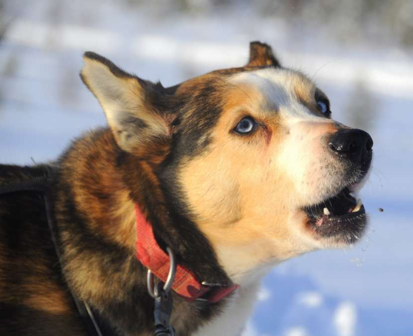
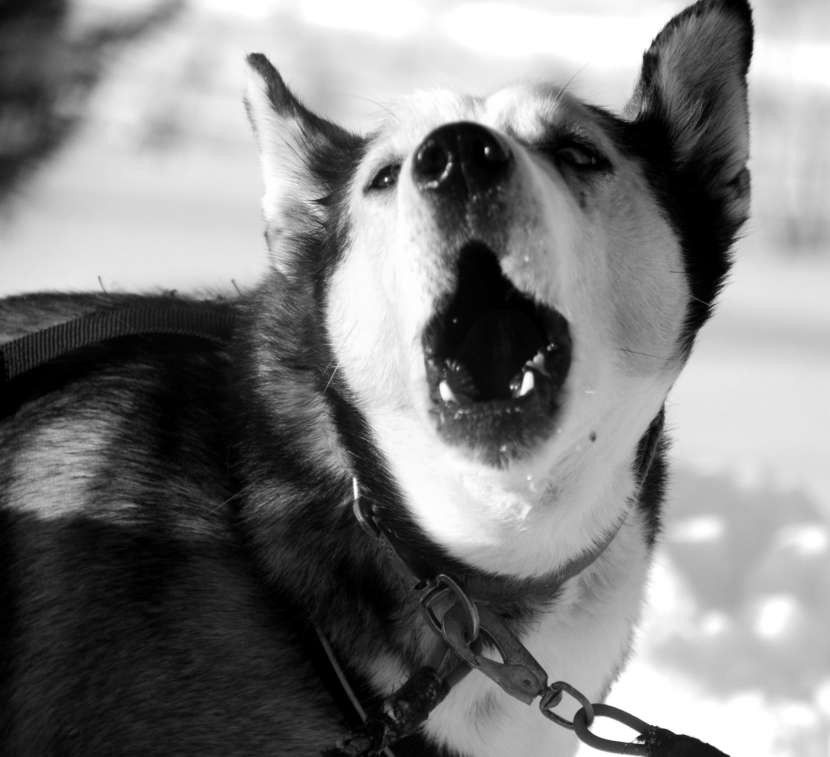
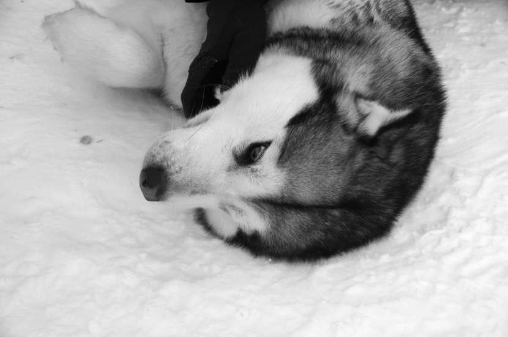
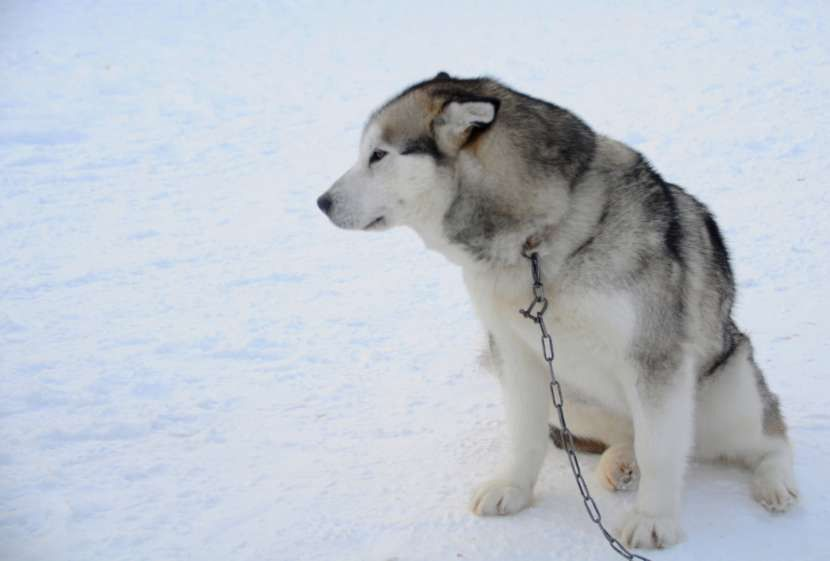
כבר באוטובוס אנחנו מתעדכנים באפליקצית הזוהר הצפוני ורואים שצפויים שמיים בהירים הלילה אולם עם פעילות סולארית נמוכה, אבל יש סיכוי שנראה זוהר! וכן לאחר מנוחה קצרה וארוחת ערב, אנחנו צועדים חמושים במצלמות וחצובות לכיוון מוזיאון הארקטיקום (המקום הכי חשוך בעיר) בתקווה לראות את הפלא הזה.
אז מה צריך כדי לראות את הזוהר?
הזוהר הצפוני (Aurora borialis) היא תופעה המתרחשת בעת פעילות מוגברת של השמש כאשר אטומי החמצן באטמוספירה טעונים באופן קבוע ובעת שמגיעה "רוח השמש" טעונה מטען גם היא, נוצר מפגש בין האטומים הטעונים המצריך שחרור אנרגיה, שבא לידי ביטוי בהופעת זוהר הקוטב.
צבעו של זוהר הקוטב נקבע בהתאם לסוג האטום. ירוק, שהוא הצבע הנפוץ ביותר, נוצר כתוצאה מפגיעה באטום חמצן. ואילו צבעים נדירים יותר כאדום וכחולנוצרים מאטומי מימן או חנקן, או מפגיעה ברמה גבוהה יותר של האטמוספירה. יש גם זוהר דרומי שנקרא אאורורה אוסטרליס.
התופעה מתקיימת כל השנה, אולם ניתן לראותה רק כשחשוך ולכן העונה הטובה ביותר לצפייה בזוהר הצפוני היא מסוף אוגוסט (כשהלילות כבר חשוכים) ועד תחילת אפריל, בקיץ השמש לא שוקעת ולכן לא ניתן לראות את התופעה. כמו כן צריך להיות בקו גיאוגרפי מסוים- latitude (כמה שיותר צפונה או דרומה- קרוב לקוטב מגנטי של כדור הארץ) ולכן לא ניתן לראות את הזוהר מכל מקום בעולם אלא רק ממקומות צפוניים מאוד או דרומיים מאוד.
אבל לצערנו עדיין לא מספיק להיות בצפון ובעונה המתאימה כי נדרשים עוד שני תנאים קריטיים-1. פעילות סולארית (רוח שמש) שנקרת KP 2. שמיים נקיים מעננים כי עננות יכולה להסתיר את הזוהר. שימו לב ככול שה-KP גבוהה יותר ניתן יהיה לראות את הזוהר ממקומות "דרומיים" יותר ובעוצמה חזקה יותר.
חשוב שתבינו שמדובר במזל נטו ולכן אל תתכננו טיול רק כדי לראות זוהר צפוני כי אתם עשויים להתאכזב, תחשבו על הזוהר כאחלה תוספת לחוויה של הטיול.
לצערנו -KP מאוד חלש היום 0.7 אולם עדיין בזכות השמיים הנקיים אולי יתמזל מזלנו ונראה משהו. ואכן אחרי כמה דקות שהתמקמנו אנחנו רואים ענן באופק שזז מעט, בכדי לוודא שזה אכן הזוהר אני מכוונת את המצלמה לחשיפה ארוכה ואכן זה זוהר- הענן בתמונה הצבע ירוק! לאט לאט הוא מתחזק ורואים את הירוק גם בעין חשופה! בשלב הזה שכחנו את הקור (מינוס 15) וכל מה שעניין אותנו זה לצלם ולראות את הפלא הזה. לצערנו הזוהר לא התחזק מעבר לפס ירוק בשמיים אבל עדיין ראינו זוהר צפוני!!!
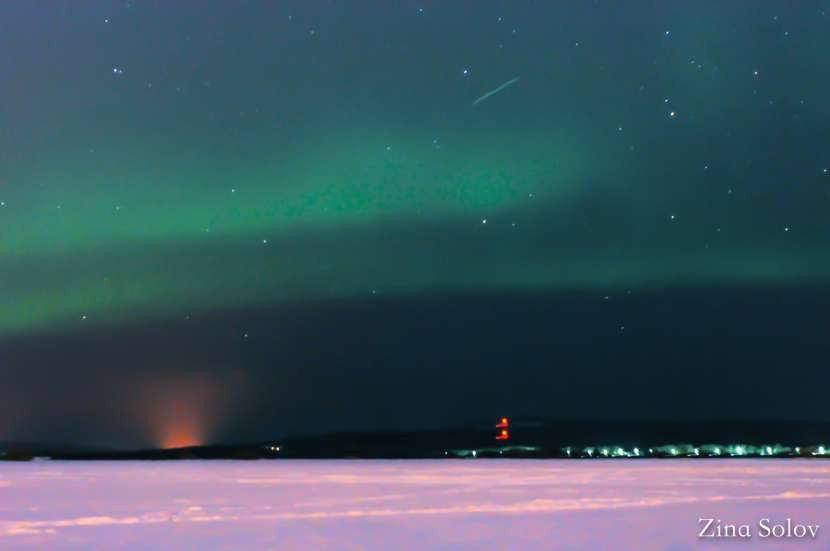
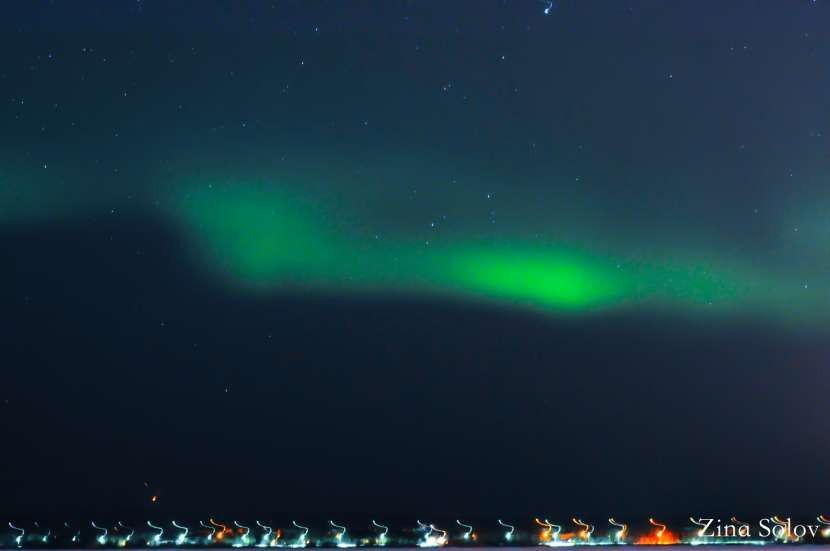
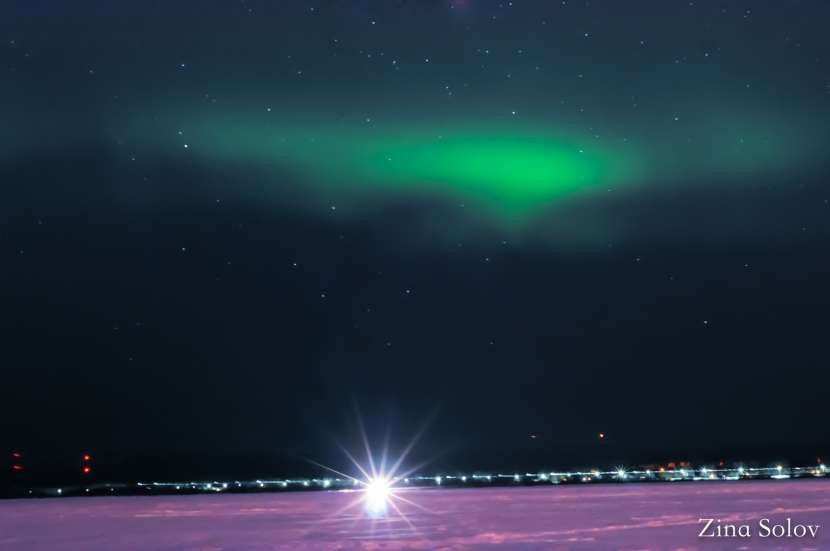
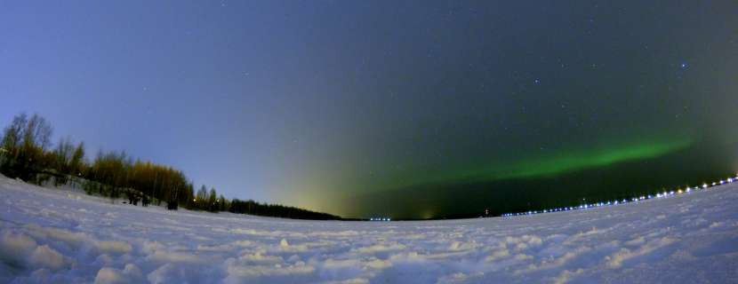
יום 3- 26.2
אנחנו מתעוררים לעוד יום של שמש, אולם הצצה חטופה בחלון על מד הטמפרטורה שבכיכר העיר מלחיץ אותנו מאוד- מינוס 19 מעלות בחוץ! זה יותר קר מהפריזר במקרר בבית! והיום יש אופנועי שלג.…
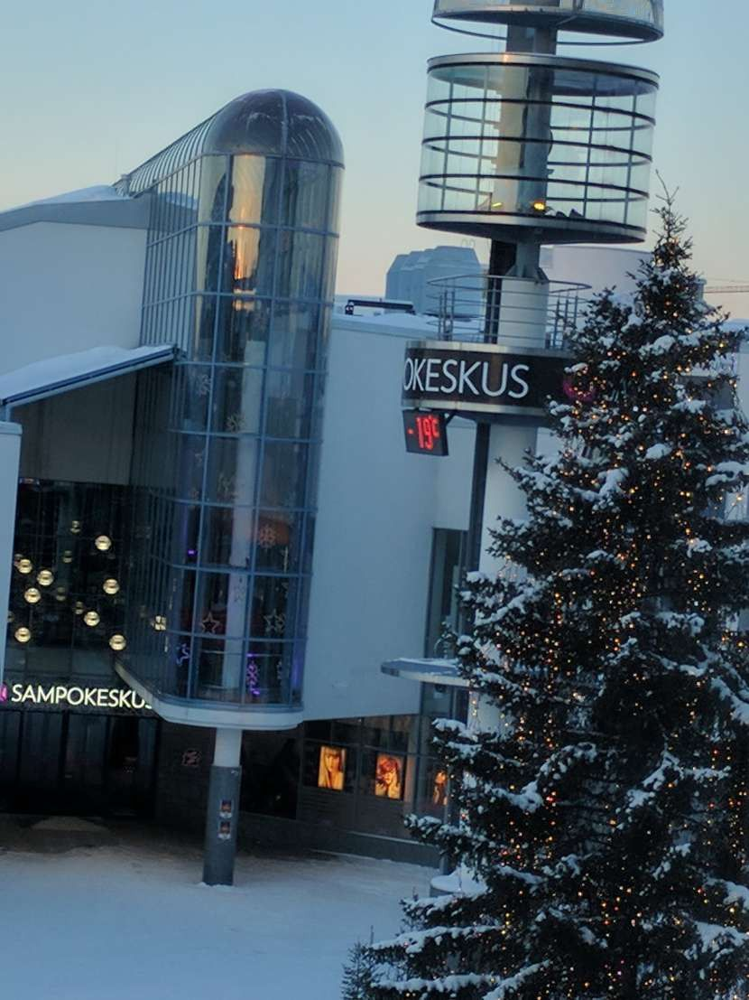
אחרי ארוחת בוקר אנחנו עולים להצטייד בכל השכבות החמות שרק אפשר כשהמון שקיות חימום תחובות לנו במקומות אסטרטגיים בגוף.
יורדים ליד הנהר שם חונים אופנועי השלג ומתחילים בתדריך הבטיחות, האוויר קפוא, אין דרך לתאר את הכפור בחוץ אבל השמש זורחת, השמיים כחולים והשלג מנצנץ כמו אלפי יהלומים. הנסיעה על האופנוע היא בזוגות, אחד נוהג ושני מאחור, למי שנוהג יש חימום ברגליים מהמנוע ובידיות האחיזה, מי שמאחור- קופא!
זו לא הפעם הראשונה שלנו על אופנועי שלג, כבר עברנו את החוויה באיסלנד על קרחון הואוטניוקול בתנאים של white out (הכל לבן- גם השמיים), ועדיין החלטנו שבעלי ינהג קודם כדי להתרגל ואני אחריו, מה שלא חווינו באיסלנד זה הקור! אין דרך לתאר את הכפור שפשוט חודר לעצמות במהלך הנסיעה, אם בחוץ מינוס 19 אז יחד עם הרוח כשנוסעים מרגישים בכיף מינוס 25!
אנחנו מתחילים בנסיעה על גבי הנהר הקפוא, בהתחלה האדרנלין זורם ואנחנו נהנים לצלם (במצלמת גו פרו שמחוברת לקסדה ולהפתעתנו לא קפאה כל הנסיעה), משם נכנסים ליער ונוסעים קצת בין העצים, בשלב מסוים אני קולטת שהשער שלי שנתקע בקסדה וליד הפנים הופך ללבן- קופא! הרי בתוך הקסדה האוויר שאנחנו פולטים חם ולח ובכפור הזה השיער בנחיריים והריסים פשוט קופאים. אבל בשום אופן על תרימו את הקסדה גם אם היא קפואה כי זה מתכון לכוויות רוח (שחטפתי דרך אגב).
אחרי כשעה עוצרים על הגבעה ליין חם, הנוף משגע אבל הטלפון פשוט נכבה ולא ניתן לצלם- רק תמונה אחת הצלחנו. כשאנחנו מתחמים טיפה מהיין ולאחר שסיימנו להצטלם ליד האופנועים מתארגנים להמשך הנסיעה וזה הזמן להתחלף. אני כל כך קפואה שאני מודיעה לבעלי שאין שום סיכוי בעולם שאני ממשיכה לשבת מאחור! רק מה, המארגנים בחרו מקום די גרוע להחלפה כי הקטע השני עובר ביער בין עצים צפופים והנתיב נסיעה מאוד צפוף ומאתגר, מהר מאוד אנחנו שומעים בום וכל השיירה עוצרת- מישהו כבר נכנס בעץ...לא נגרם נזק לא לאנשים, לא לעץ אולי ממש קצת לאופנוע, ואנחנו ממשיכים. ברגע שאני נוהגת החוויה שונה לגמרי, גם האדרנלין וגם החימום עושה את העבודה ולאט לאט אני חוזרת לעצמי ונהינת מהדרך ואפילו מהבמפרים הקופצניים.
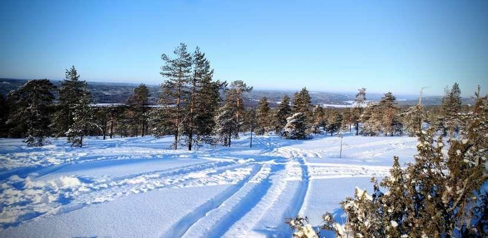
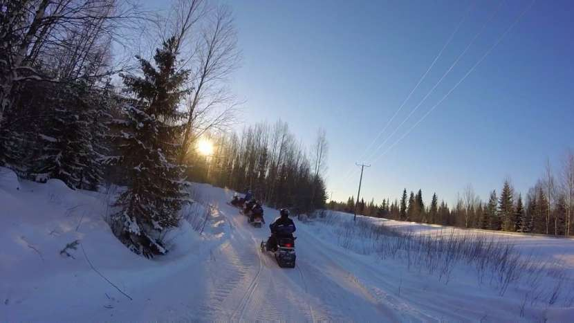
לאחר 3 שעות של חוויה קפואה לגמרי חזרנו לנקודת ההתחלה, לצערי עוד משהי חשה שלא בטוב בגלל הקור, אפילו בעלי טען שלא היה לו כל כך קר מעולם (והוא רץ עם בגד ים בשלג במוסקבה!).
טיפ שלי למי מכם שנוסע עם ילדים- הייתי מחכה להתחממות (אמצע-סוף מרץ), אם אנשים מבוגרים קפאו מאחורה אז לא רואה איך אפשר לעשות את הפעילות עם ילדים.
אנחנו פשוט מורעבים! כך שמיד הולכים לאכול צהריים, מבט מהיר במד טמפרטורה בכיכר המרכזית מראה שעדיין מינוס 19 מעלות בחוץ.
אחרי האוכל מצפה לנו עוד חוויה קפואה להיום והיא מזחלות שלג. נוסעים לאתר הסקי- טופוגן ליד רובניימי, בגלל שיום ראשון היום האתר הומה משפחות עם ילדים שעושים סקי, אנחנו עולים על הרכבל לכיוון המזחלות. מדובר במזחלות קטנות עם בלם והגה, איזה חוויה כיפית!!! כולנו חזרנו להיות בני 6 וכמו ילדים קטנים אחרי כל התגלשות מוצלחת מיד רצנו למעלה לסיבוב נוסף. אפילו הצלחתי לרדת מבלי ללחוץ על הברקס כלל- אמנם כמעט עפתי לשלג ליד אבל איזה כיף!!!
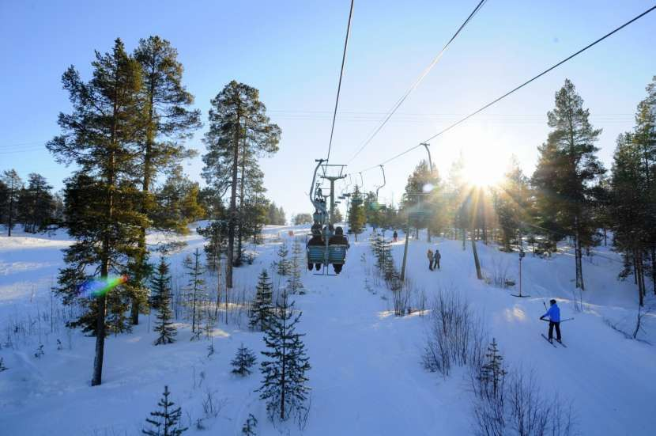
בערב ציפתה לי הפתעה פחות נעימה כשנכנסתי למקלחת וראיתי שהפנים שלי שפוט אדומות בטירוף, לאחר גיגול מהיר מסתבר שחטפתי כוויות רוח- wind burn שזה בדיוק כמו כוויות שמש רק שלמזלי אמור לעבור מהר יותר... לא שזה עוזר לי הרבה כי אני הולכת להיראות כמו עגבנייה בכל התמונות מעכשיו, לפחות הצבע מתאים למעיל האדום והיפה שלי... בעלי מחליט לעודד אותי אז אנחנו יוצאים לשוטטות קצרה סביב הנהר הקפוא, מצטלמים על רקע השקיעה והגשר ויושבים על הספסלים שבגלל השלג הם בגובה הרצפה. לסיום אנחנו מקנחים בקפה ועוגה באחת המסעדות.
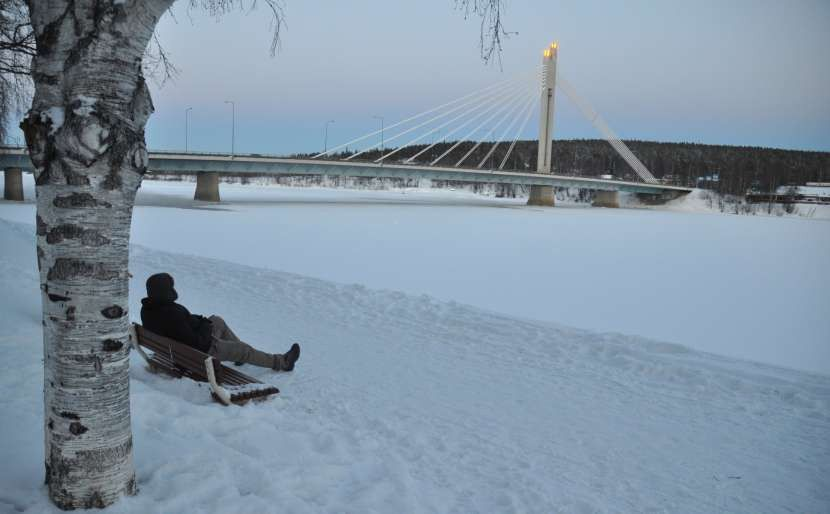
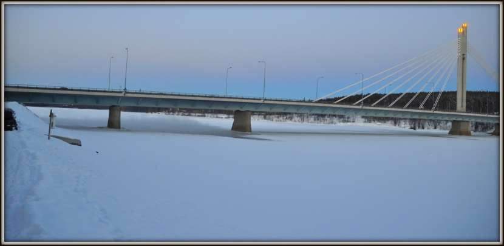
יום 4- 27.2
היום יש לנו יום יותר רגוע אחרי כל האדרנלין והאקסטרים של אתמול. אנחנו נוסעים לרנואה, לגן החיות הארקטי. רנואה זה ישוב קטן במרחק שעה וקצת מרובניימי. ליד גן החיות יש גם חוות כלבי האסקי, מלון וכן רשת השוקולד פייזר.
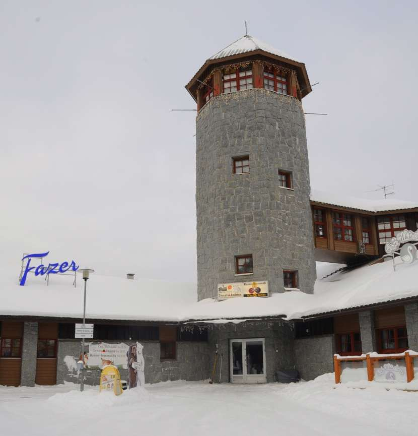
גן החיות הוקם בשנת 1983 ונחשב כגן החיות הצפוני בעולם. יש בו מעל 200 דיירים ביניהם חיות פרא כמו זאבים, דובים ודובי קוטב, שועלים ארקטיים וכו.
הגן חביב למדי וזה מדהים לראות את החיות על רקע השלג (יש לציין שהחיות מאוקלמות לשלג, אין שם ג'ירפות או פילים שמן הסתם קר להם מידי בתנאים האלה). ממש לא מזמן נולד במקום דב קוטב והוא נמצא עם האמא בבידוד כך שראינו רק את האבא משתעמם לו בחוץ. ראינו גם המון ציפורי טרף וינשופים, זאבים, ולינקס וכן חיות פשוטות כמו איילים ומוס. אכלנו ארוחת צהריים במסעדה של גן החיות וקינחנו בקניית שוקולדים בפייזר, אגב המחירים שם באמת יחסית זולים כך ששווה לקנות שם.
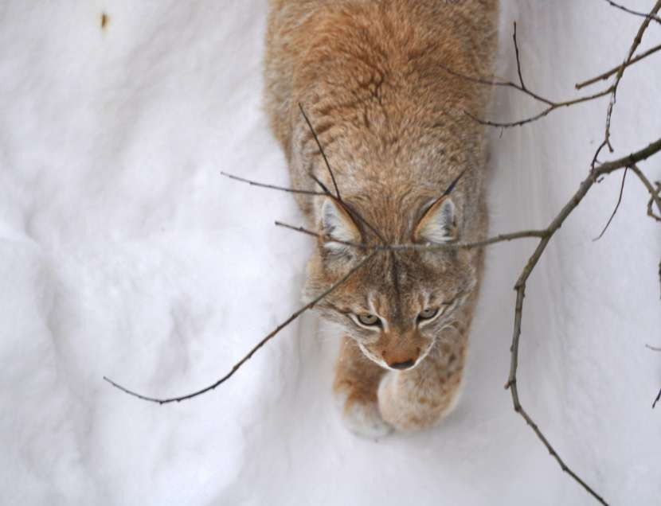
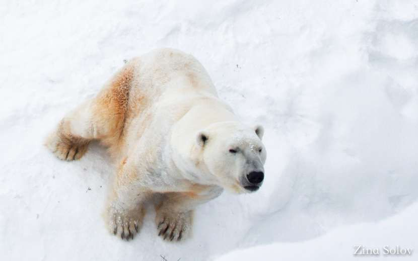
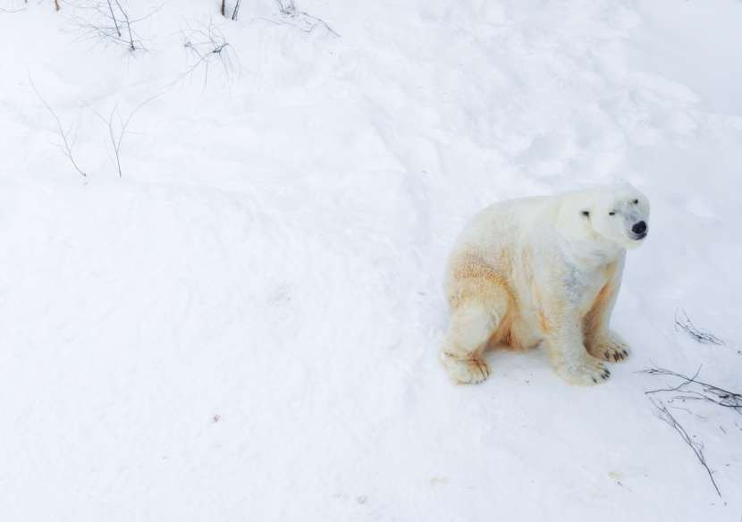
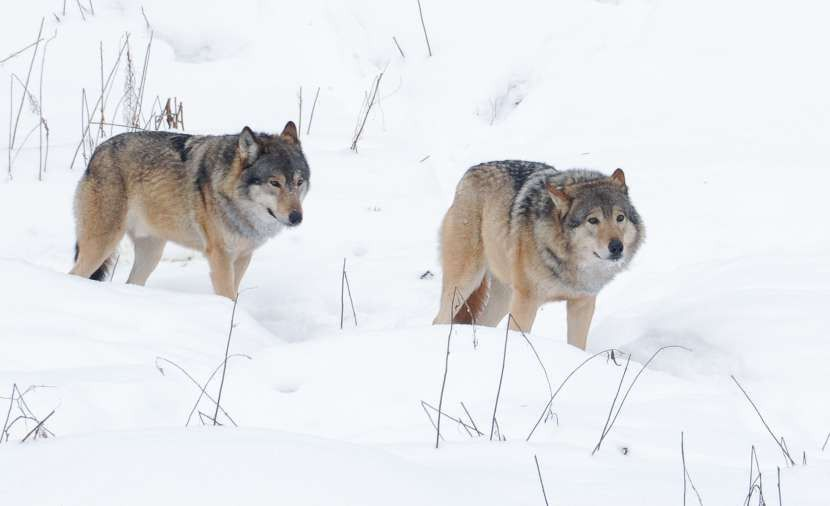
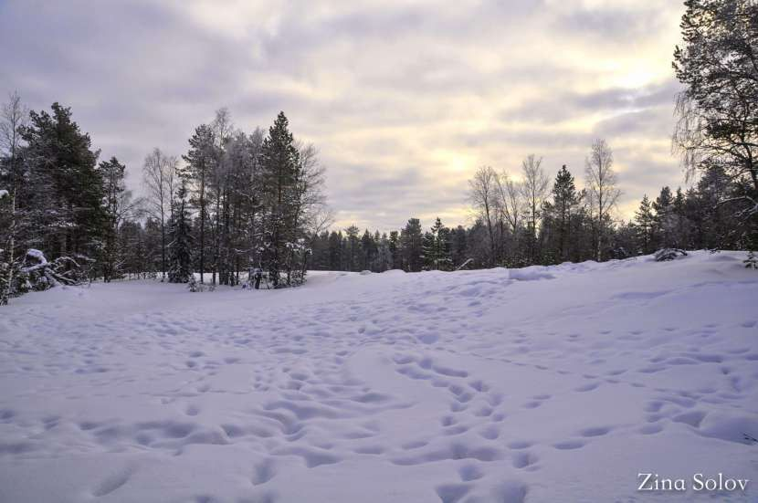
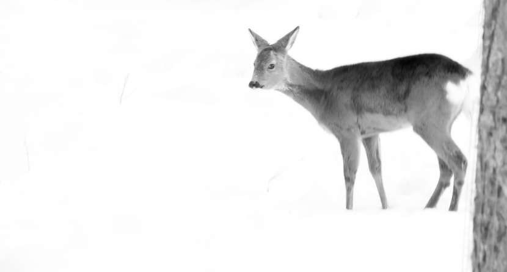
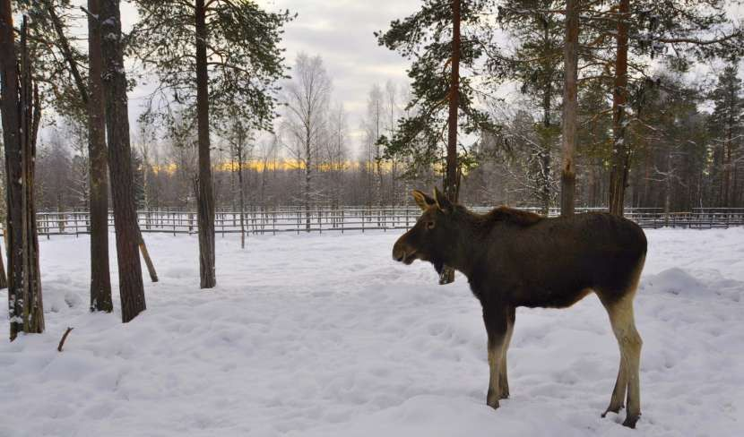
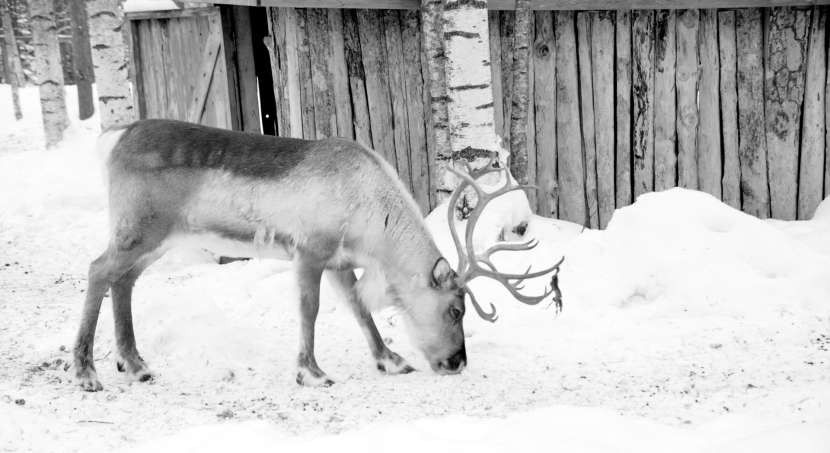
אחרי החוויה החביבה בגן החיות אנחנו נוסעים לכפר של סנטה קלאוס. לפי המסורת, מדובר בזקן חביב וטוב לב, המגיע בלבוש אדום/ירוק (ירוק לפי האגדה הסקנדינבית ואדום לפי האמריקאית) מחבל לפלנד שבצפון סקנדינביה ומסתובב ברחבי העולם על גבי מזחלת רתומה לאיילים מעופפים. תפקידו של סנטה קלאוס לפקוד את בתי הילדים הטובים, להביא להם מתנות ולהגשים משאלות בחג המולד.
הכפר עצמו כפי שצפוי הא מלכודת תיירים מהלכת. מצד אחד יש במקום עמודים המסמלים את גבול החבל האקרטי אז זה נחמד לחצות אותו, פרט לכך יש במקום שפע חנויות, בתי קפה, איש שלג ענק ומזחלות איילים. למי מכם שממש רוצה לחוות את החוויה מוזמן להיכנס לאוהל של סנטה ולהצטלם איתו, אגב יש שניים, אחד ב-20 יורו ואחד ב-40... אתם יכולים גם להכין גלויה לחג המולד ולבקש שישלחו למי שרשמתם לפני החג.
אנחנו כמובן לא נהנים ממסחטת הכסף הזו אז בילינו בנעימים בבית קפה.
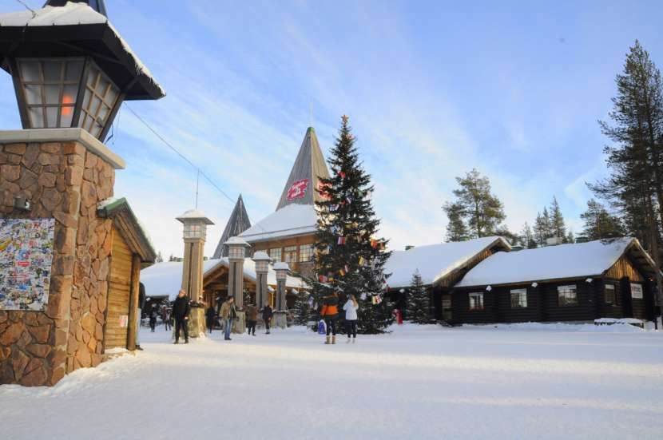
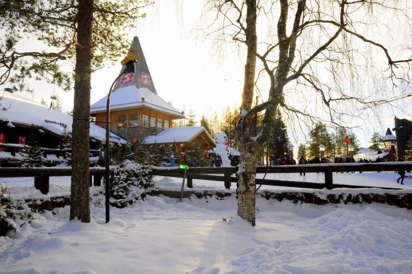
כשחזרנו למלון מצב עור הפנים שלי לא היה משהו אז החלטנו ללכת לקניון ולחפש איזה משחה (מומלץ וזלין), אמרנו גם שעל הדרך נעשה סיבוב בקניון. אז קנינו לי משחה (וזלין וקרם של וולדה), קנינו לי מכנס סקי בהנחה ואז נכנסנו לסופר וראינו את הסלמון הזה-
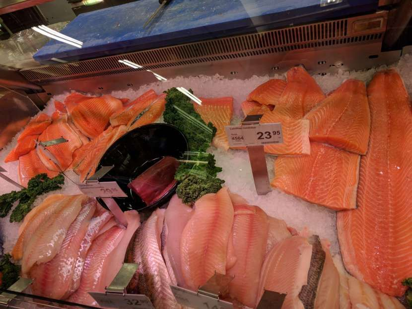
מייד קנינו וזכינו לנשנוש מעולה בחדר לאחר מכן. בערב קינחנו עם בירה בפאב.
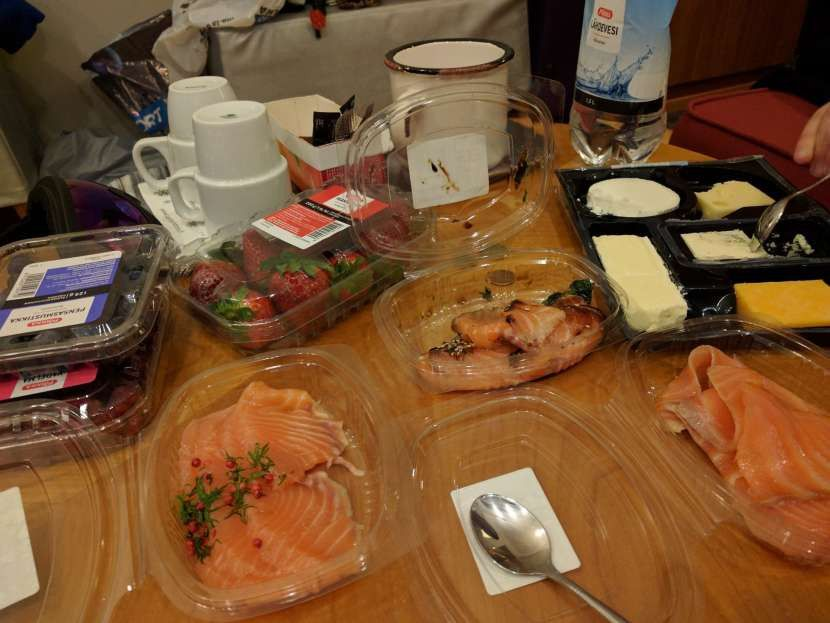
יום 5- 28.2:
היום אנחנו נוסעים למפלי קורואומה ((Korouma הידועים בעונה זו כ-"המפלים הקפואים". הנסיעה לוקחת כשעה וקצת מרובניימי, בזמן הזה אנחנו מתרשמים מהנוף הלבן של נהרות קפואים ועצים מלאי שלג.
קורואומה זו בעצם שמורה עם מספר מסלולי הליכה שניתן לעשות בקיץ וגם בחורף, כמיטב המסורת הפינית גם כאן יש בקתות עם עצים חטובים ומוכנים להבערת אש לחימום יין פירות. המסלול למפלים הוא מסלול בירידה מתונה כך שתצטרכו לצעוד במשנה זהירות, למי מכם שיש מקלות הליכה עם חוד כדאי להביא, או לחלופין תמיד אפשר להביא מזחלת ופשוט לגלוש עד למטה.
לילה לפני ירד שלג כך שהכל מכוסה שכבה לבנה פריכה ומנצנצת שפשוט קשה להתאפק שלא לסטות מהמסלול כדי לשחוק בשלג, מידי פעם אנחנו חוטאים וסוטים מהמסלול ונהנים משלג עד הברך ומעלה :).
אחרי ירידה של כעשרים דקות מגיעים לבקתות, שם המדריכה המקומית נשארת לחמם לנו יין ואנחנו ממשיכים בשביל צר מכוסה שלג העובר בין עצים קפואים עד למפלים. הנוף משגע- הכל לבן! ופתאום מסתכלים מעלה על הרכס ורואים נאד מים קפוא לגמרי! למי שרוצה יכול גם להגיע ממש עד מתחת למפלים ואפילו לטפס עליהם, אבל לא הייתי ממליצה ללא ציוד טוב או מדריך, בקלות ניתן להחליק ולשבור יד או רגל וחבל על הטיול (רק אתמול מישהו שבר יד בגלל שהחליק על השלג).
אחרי ששתינו יין והתחממנו, הגיע הזמן לחימום האמיתי- העלייה חזרה! העלייה לא באמת קשה אבל, כשאתם עם כלכך הרבה שכבות לבוש העלייה לא קלה בכלל! אז אחרי כחצי שעה של התנשפויות הגענו למעלה לאוטובוס. אחרי ארוחת הצהריים ובדרך חזרה עצרנו בתצפית יפהפייה על הנהר הקפוא והיער סביב, לצערי אני לא זוכרת את שם המקום- אבל זה נראה כך:
האטרקציה השנייה להיום היא ביקור במוזיאון הארקטיקום, האמת אחלה מוזיאון, יש שם הסבר על התרבות הסאמית, על בעלי החיים במקום, על הזוהר הצפוני, בהחלט ביקור נחמד שיכול לעביר שעתיים בכיף.
בערב החלטנו לנסות את מזלנו ואולי לזכות לראות שוב את הזוהר, לפי האפליקציה ה-KP אמור להיות גבוה, כך שצעדנו מהמלון לאיזור המוזיאון. לצערנו כשנכנסנו לאיזור החשוך הבנו שאנחנו בתוך ענן ושאין סיכוי שנראה איזשהו זוהר. קצת מאוכזבים הלכנו לישון.
יום 6- 1.3:
את הדובדבן שבקצפת שמרנו לסוף, אז היום אנחנו נוסעים לעיירה קמי הנמצאת לחופו של המפרץ הבוטני, כשעתיים וחצי נסיעה מרובניימי, כדי לראות את טירת הקרח ולקינוח שייט בשוברת הקרח סאמפו.
מתחילים עם ארמון הקרח, מבנה הבנוי כולו מקרח אשר נבנה כל שנה- מדצמבר ועד אפריל בו הוא נמס. בכל שנה יש נושא מרכזי לארמון, השנה הוא בסימן חגיגות ה-100 לעצמאות פינלנד, ואכן בתוך הארמון מגולפות דמויות (סופרים ופוליטיקאים) פיניים.
הארמון די מרשים, מיוחד הבאר שעשוי מקרח, למי שרוצה מוזמן גם לבלות לילה במלון בחדרי קרח, על מיטות רכות ונוחות מכוסות בשמיכות חמות! אנחנו מן הסתם הסתפקנו בלהציץ בחדרים. עוד אטרקציה נחמדה היא מגלשת השלג שיש בחצר הארמון- לוקחים אבוב ומתגלשים מטה.
אחרי כוס קפה הלכנו לעשות סיבוב במתחם, מסתבר שליד מלון הקרח יש גם מלון בו ניתן לראות את הזוהר הצפוני- חדרים קטנים ומקסימים עם קיר ותקרה שקופה שמשקיף לנהר הקפוא, לצערנו מזג האוויר היום מעונן מאוד עם פתיתי שלג רטוב (חם היום, רק מינוס 4) מה שיוצר שמיים לבנים לגמרי.
התחנה הבאה והאטרקציה האחרונה בטיול הזה היא שייט בשוברת הקרח סאמפו. אז מה זה שוברת קרח: שוברת קרח אינה מצוידת בסכין בחרטומה, אלא שבירת הקרח נעשית ע"י טיפוס הספינה מעל הקרח ושבירתו ע"י משקלה הרב של הספינה. שוברת הקרח זקוקה לשלדה מחוזקת כדי לעבוד בסביבת קרח. ספינות אלה משתמשות במומנטום ובכוחן כדי לדחוף את חרטום הספינה מעל הקרח. משקלה של הספינה גורם לקרח שמתחתיה להישבר לשניים ולהתנתק בחתיכות. עיצובה המיוחד של גוף שוברת הקרח מכוון את הקרח השבור מסביב לספינה כדי לאפשר לספינה להתקדם הלאה.
הסאמפו נבנתה בשנות ה-60 ושימשה כשוברת קרח בצי הפיני במשך כ-30 שנה, אבל לאורך השנים עם התפתחות טכנולוגית ובניית ספינות גדולות יותר הסאמפו פשוט הפכה לקטנה מידי ולכן יצאה לגמלאות. בצעד חריג מאוד (שהוכח כמאוד רווחי) עריית קמי החליטה לקנות את הספינה ולהשמיש אותה לתיירות. מדובר בשוברת קרח התיירותית היחידה בעולם!
יש 3 הפלגות ביום, עלות כ-200 יורו לאדם. מדובר בשייט של 4 שעות במפרץ הבוטני (האיזור הצפוני של הים הבלטי) במהלך השייט עושים סיור בספינה ומקבלים הסבר על הספינה, מנועים, טכניקת שבירה וכו, בשלב כלשהו מתחילים להרגיש איך הקרח נשבר- מרגישים בומים כאלה, כשתרגישו בום כזה לכו לראות, זו חוויה מדהימה לראות את הקרח נשבר ממש מתחתיכם (קרח בעובי מטר!!!), בהמשך יש ארוחה והשיא הוא לקראת הסוף בו הספינה מייצרת מעין בריכה כזו ואתם הולכים ללבוש חליפה מיוחדת שפותחה בנאסא שהיא אטומה לגמרי למים, יורדים מהאונייה וצועדים על פני הים הקפוא ומחליקים לתוך בריכת קרח לטבילה!
בעלי ויתר על התענוג והסתפק בצילום, אני לעומת זאת הצטרפתי לים ה"טלטאביז" (כי כך נראים עם החליפה) לציפה בים הקרח, טיפ- אל תתפסו קרחון זה יכול להטביע אתכם! פרט לכך מדובר בחוויה מדהימה של שחיה בים קפוא מבלי להירטב בכלל! כשהחלפתי בגדים טיילנו קצת על הים הקפוא, זה פשוט לא נתפס שאתם מהלכים על מים! כפי שכתבתי קודם היום השמיים לבנים מה שממש יוצר תופעה של white out שפשוט לא ניתן להבחין בין ים לשמיים וזה כלכך מוסיף לדרמטיות של החוויה!
עייפים ומאוד מרוצים חזרנו מאוחר בערב למלון לארגן תיק כי מחר טסים ארצה.
למחרת הטיסה שלנו מתעכבת (בגלל תקלה בנתב"ג) אז אנחנו מעבירים את הזמן בשוטטות בעיירה. אבל זכינו לפיצוי בדמות זוהר צפוני משגע שראינו ברגע שהמטוס המריא ויצא ממעטה העננים- חבל שלא הצלחתי לצלם.
זהו תם הטיול שלנו, מקווה שנהנתם מהקריאה.
בניגוד לטיולנו הקודמים, הטיול שלנו היה מאורגן אולם למי רוצה טיול עצמאי זה לא מסובך כלל לארגן לבד. ברובניימי יש שפע חברות שמציעות טיולים- אופנועי שלג, כלבי האסקי, צפייה בזוהר, חוות איילים וכו'. הסייג היחיד זה שאם אתם שוכרים רכב הייתי נזהרת כי דרושה מיומנות לנסוע בשלג (מיומנות שקצת חסרה לנהג הישראלי הממוצע).